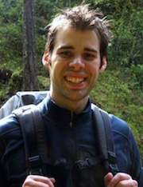

-
Education:
I graduated from Reed College in
the Spring of 2009 with a degree in Mathematics. For the following
year, I took courses in computer science at Portland State University.
-
Academic Interests:
I am interested in machine learning, machine vision, cryptography,
algorithms, and complexity/computability theory. Also, I will always
hold a deep love for mathematics and especially modern algebra.
-
Interests: My primary hobby is
Go,
although I also love biking, tango, drawing, puzzles and math problems.
Currently, I am part of the
Boulder Go Club;
before that, I was part of the Portland Go Club at the
Bamboo Grove Salon.
I also play on
KGS
as Kashomon and my rank is about 1k.
-
Contact: Your best bet is email: jrhoak .a.t. gmail. I'm
also available on
Facebook
and on
LinkedIn.

In the Columbia Gorge, Spring 2010.